File: 000810.gt.txt (if the image is defective, simply delete all Arabic text and the line will be excluded)
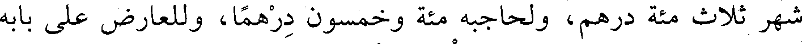
شهر ثلاث مئة درهم، ولحاجبه مئة وخمسون درهما، وللعارض على بابه
File: 000811.gt.txt (if the image is defective, simply delete all Arabic text and the line will be excluded)
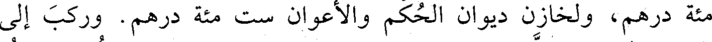
مئة درهم، ولخازن ديوان الحكم والأعوان ست مئة درهم. وركب إلى
File: 000812.gt.txt (if the image is defective, simply delete all Arabic text and the line will be excluded)
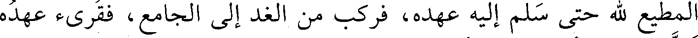
المطيع لله حتى سلم إليه عهده، فركب من الغد إلى الجامع، فقرىء عهده
File: 000813.gt.txt (if the image is defective, simply delete all Arabic text and the line will be excluded)
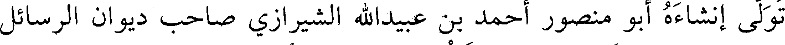
تولى إنشاءه أبو منصور أحمد بن عبيدالله الشيرازي صاحب ديوان الرسائل
File: 000814.gt.txt (if the image is defective, simply delete all Arabic text and the line will be excluded)
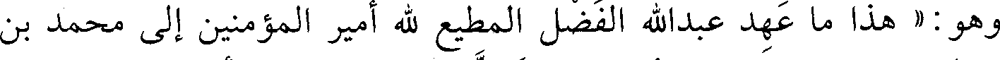
وهو: « هذا ما عهد عبدالله الفضل المطيع لله أمير المؤمنين إلى محمد بن
File: 000815.gt.txt (if the image is defective, simply delete all Arabic text and the line will be excluded)
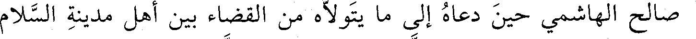
صالح الهاشمي حين دعاه إلى ما يتولاه من القضاء بين أهل مدينة السلام
File: 000816.gt.txt (if the image is defective, simply delete all Arabic text and the line will be excluded)
قال الميداني : توفي في شهر رمضان.
File: 000817.gt.txt (if the image is defective, simply delete all Arabic text and the line will be excluded)
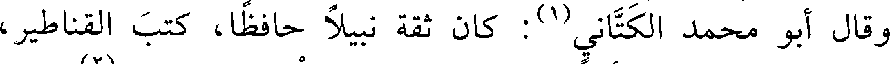
وقال أبو محمد الكتاني(1) : كان ثقة نبيلا حافظا، كتب القناطير،
File: 000818.gt.txt (if the image is defective, simply delete all Arabic text and the line will be excluded)
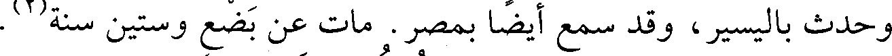
وحدث باليسير، وقد سمع أيضا بمصر. مات عن بضع وستين سنة(2) .
File: 000819.gt.txt (if the image is defective, simply delete all Arabic text and the line will be excluded)
90 - مروان بن عبدالملك القرطبي الزاهد.
File: 000820.gt.txt (if the image is defective, simply delete all Arabic text and the line will be excluded)
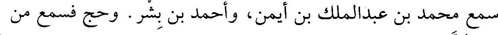
سمع محمد بن عبدالملك بن أيمن، وأحمد بن بشر. وحج فسمع من
File: 000821.gt.txt (if the image is defective, simply delete all Arabic text and the line will be excluded)
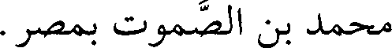
محمد بن الصموت بمصر.
File: 000822.gt.txt (if the image is defective, simply delete all Arabic text and the line will be excluded)
وكان زاهدا عابدا خيرا، توفي في ربيع الآخر(3) .
File: 000823.gt.txt (if the image is defective, simply delete all Arabic text and the line will be excluded)
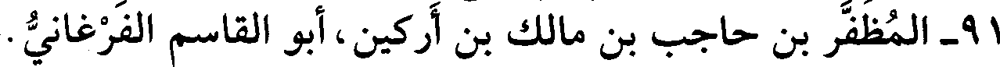
91 - المظفر بن حاجب بن مالك بن أركين، أبو القاسم الفرغاني.
File: 000824.gt.txt (if the image is defective, simply delete all Arabic text and the line will be excluded)
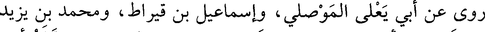
روى عن أبي يعلى الموصلي، وإسماعيل بن قيراط، ومحمد بن يزيد
File: 000825.gt.txt (if the image is defective, simply delete all Arabic text and the line will be excluded)
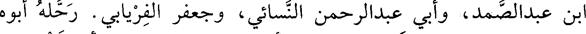
ابن عبدالصمد، وأبي عبدالرحمن النسائي، وجعفر الفريابي. رحله أبوه
File: 000826.gt.txt (if the image is defective, simply delete all Arabic text and the line will be excluded)
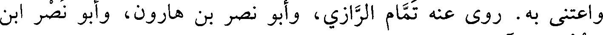
واعتنى به. روى عنه تمام الرازي، وأبو نصر بن هارون، وأبو نصر ابن
File: 000827.gt.txt (if the image is defective, simply delete all Arabic text and the line will be excluded)
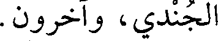
الجندي، وآخرون.
File: 000828.gt.txt (if the image is defective, simply delete all Arabic text and the line will be excluded)
حدث في هذا العام(4) .
File: 000829.gt.txt (if the image is defective, simply delete all Arabic text and the line will be excluded)
قرأت على عمر بن غدير : أخبركم عبدالصمد بن محمد الأنصاري
File: 000830.gt.txt (if the image is defective, simply delete all Arabic text and the line will be excluded)
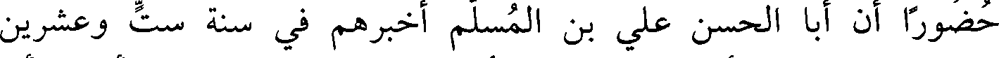
حضورا أن أبا الحسن علي بن المسلم أخبرهم في سنة ست وعشرين
File: 000831.gt.txt (if the image is defective, simply delete all Arabic text and the line will be excluded)
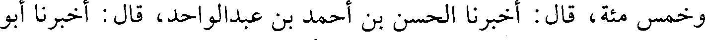
وخمس مئة، قال: أخبرنا الحسن بن أحمد بن عبدالواحد، قال: أخبرنا أبو
File: 000832.gt.txt (if the image is defective, simply delete all Arabic text and the line will be excluded)
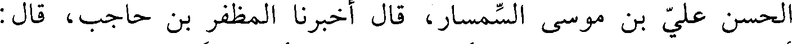
الحسن علي بن موسى السمسار، قال : أخبرنا المظفر بن حاجب، قال:
File: 000833.gt.txt (if the image is defective, simply delete all Arabic text and the line will be excluded)
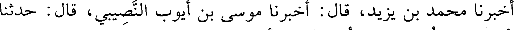
أخبرنا محمد بن يزيد، قال : أخبرنا موسى بن أيوب النصيبي، قال : حدثنا
File: 000834.gt.txt (if the image is defective, simply delete all Arabic text and the line will be excluded)
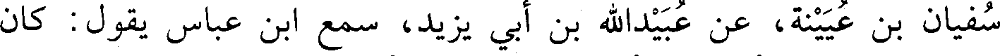
سفيان بن عيينة، عن عبيدالله بن أبي يزيد، سمع ابن عباس يقول : كان
File: 000835.gt.txt (if the image is defective, simply delete all Arabic text and the line will be excluded)
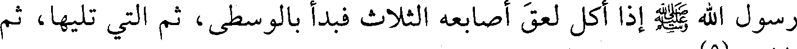
رسول الله صعلم إذا أكل لعق أصابعه الثلاث فبدأ بالوسطى، ثم التي تليها، ثم
File: 000836.gt.txt (if the image is defective, simply delete all Arabic text and the line will be excluded)
الإبهام(5).
File: 000837.gt.txt (if the image is defective, simply delete all Arabic text and the line will be excluded)
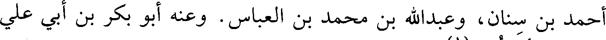
أحمد بن سنان، وعبدالله بن محمد بن العباس. وعنه أبو بكر بن أبي علي
File: 000838.gt.txt (if the image is defective, simply delete all Arabic text and the line will be excluded)
قرابته، وأبو نعيم(1) .
File: 000839.gt.txt (if the image is defective, simply delete all Arabic text and the line will be excluded)
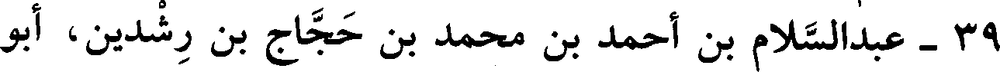
39 - عبدالسلام بن أحمد بن محمد بن حجاج بن رشدين، أبو
To Save: `Ctrl+s`, make sure to choose `Webpage, complete`!